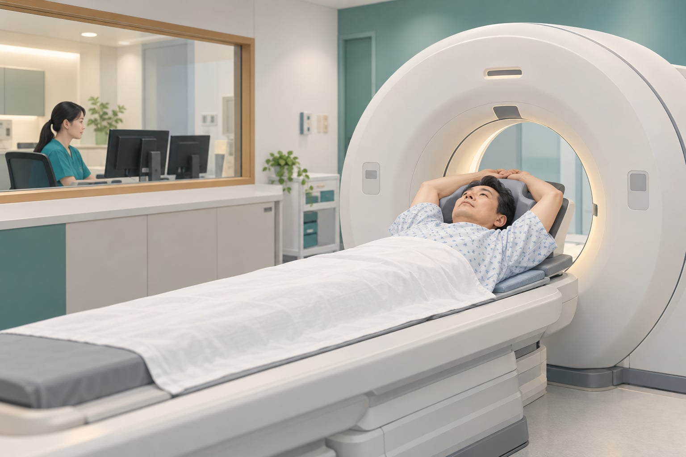

LDCT 是什麼？和胸部 X 光一樣嗎？
LDCT 是 low-dose computed tomography 的縮寫，中文是「低劑量電腦斷層」。它以較低的 X 光劑量取得肺部斷層影像，協助辨識小結節等異常；不是抽血，也不是一般胸部 X 光片。用於肺癌篩檢時，通常不需要注射顯影劑。[5]
在沒有症狀的高風險族群中，尋找可能的早期肺癌。
發現陰影或結節，仍要結合病史與後續評估。
檢查有潛在風險，應先衡量是否值得做。
篩檢的目的是降低疾病造成的傷害，不只是「找出更多結節」。一般胸部 X 光不能取代有適應症的 LDCT 肺癌篩檢。[6]
台灣公費資訊｜2026 年核對
誰符合公費肺癌篩檢資格？
國民健康署提供下列兩類高風險族群每 2 年 1 次公費 LDCT 肺癌篩檢。兩類為擇一符合；是否符合年齡、篩檢紀錄及其他執行條件，仍由院方確認。[1]
女性 40–74 歲
男性 45–74 歲
父母、子女或兄弟姊妹曾被診斷為肺癌。
此處指上述具血緣關係的親屬，不是任何親友罹癌都符合。
50–74 歲
至少 20 包年
目前仍吸菸，或戒菸未滿 15 年。
年齡、累積吸菸量與戒菸年數需同時符合本類條件。
例如：每天 1 包 × 20 年，或每天半包 × 40 年，都是 20 包年。若不同時期吸菸量不同，可分段記錄帶到門診。[5]
先分清楚：篩檢、症狀檢查、結節追蹤
| 目前情況 | 要解決的問題 | 下一步 |
|---|---|---|
| 沒有症狀，擔心肺癌風險 | 是否適合篩檢？ | 討論家族史、吸菸史、健康狀況及公費資格。 |
| 持續咳嗽、咳血或其他不適 | 症狀原因是什麼？ | 先看診，由醫師選擇診斷所需檢查，不只考慮篩檢型 LDCT。 |
| 已經發現肺結節 | 是否變化、何時追蹤？ | 帶新舊影像比較，依結節特徵安排追蹤或進一步評估。 |
篩檢是「症狀出現前」的評估；異常篩檢結果可能需要診斷檢查。[6]若有明顯呼吸困難、大量咳血或急性胸痛，請立即就醫，不要等待篩檢預約。
從門診諮詢到檢查後追蹤
先談風險與需求
整理吸菸量、戒菸時間、肺癌家族史及過去 CT；討論效益、限制與費用類別。
適合時，安排影像檢查
由門診評估開立並協助安排，依院方流程至影像檢查單位接受 LDCT。
回診看報告，訂定下一步
有沒有結節、需不需要比較舊片、何時再追蹤，都要一起確認；做完掃描並不是流程終點。
檢查當天會做什麼？
受檢者平躺在檢查台上，通常雙手舉高，依放射師指示短暫閉氣，讓檢查台通過環形掃描器。掃描本身很快，但報到、準備與等候仍需要時間。檢查準備請依院方通知；若實際安排的是其他診斷型 CT，是否使用顯影劑也可能不同。[5]
研究怎麼說？重點是「對哪些人有幫助」
重要研究支持在合適的高風險族群進行 LDCT 篩檢；但不同族群、比較方式與追蹤期間的結果，不能直接套用到每一個人。
高風險吸菸族群：相較胸部 X 光
研究納入 53,454 人。接受 LDCT 篩檢者的肺癌死亡率，相較胸部 X 光篩檢組相對降低約 20%。這不是說每位受檢者的死亡機率都減少 20 個百分點。[2]
目前或曾經吸菸者：相較不篩檢
男性主要分析在追蹤 10 年時，肺癌死亡率比為 0.76，亦即相對降低約 24%。研究對象與篩檢安排不同於 NLST，不能把兩個百分比當成同一條件下的效果排名。[3]
不吸菸者：家族史值得重視，仍有證據界線
研究在經篩選的非吸菸或極少吸菸高風險族群中發現早期肺癌，並顯示肺癌家族史的重要性。但它不是隨機對照試驗，不能單靠此研究證明篩檢降低死亡率，也不能因此推論所有不吸菸者都應定期做 LDCT。研究亦提醒過度診斷的可能。[4]
檢查前也要知道的四件事
- 輻射：低劑量仍有輻射暴露，不宜為了安心而任意密集重複檢查。
- 偽陽性：看起來可疑，最後卻不是癌症；可能帶來焦慮、追加檢查，甚至不必要的侵入性處置。
- 過度診斷：可能找到原本一生都不會造成症狀或威脅生命的癌症，進而接受不一定有益的治療。
- 偽陰性：結果正常也不能保證完全沒有肺癌；日後出現症狀仍應就醫。
門診常見問題
沒有抽菸，也需要做 LDCT 嗎？
不吸菸不等於完全沒有風險，但也不等於人人都需要定期篩檢。可以先確認家族史與年齡，再和醫師討論個別風險、健康狀況及檢查可能帶來的影響。台灣公費資格包含符合條件的肺癌家族史族群。[1][4]
多久做一次？有結節也等兩年嗎？
公費「每 2 年 1 次」是補助篩檢週期，不是所有人的結節追蹤規則。已有異常時，回診與複查時間應依影像及醫師評估安排。[1][5]
看到肺結節，就要切片或開刀嗎？
不一定。醫師會看結節的大小、型態與變化，決定追蹤或進一步檢查。可延伸閱讀肺結節追蹤重點與切片、手術評估，不要只看到報告上的「結節」就認定是癌症。
到門診就一定可以免費做嗎？
不一定。門診會先評估檢查需求，再確認公費、自費或其他診療安排。公費篩檢資格、院區服務、掛號與其他費用，請以院方確認為準；本文不提供未經確認的價格。
可以直接到張庭瑋醫師門診安排嗎？
可以先掛胸腔外科門診諮詢。醫師會評估是否適合 LDCT，並協助安排檢查與後續報告說明；實際檢查時段及執行院區依院方流程辦理。
高雄 · 胸腔外科門診
想知道自己適不適合？先來門診討論
不必先替自己決定一定要做檢查。帶著你的風險資料與疑問，門診可以一起釐清需要篩檢、症狀檢查，還是既有結節的追蹤。
- 吸菸量、吸菸年數與戒菸時間。
- 罹患肺癌的親屬與親屬關係。
- 過去胸部 CT 影像、報告與檢查日期（若有）。
- 目前症狀、重要病史及用藥資料。
可由張庭瑋醫師門診評估並協助安排 LDCT。是否適合檢查、公費資格與實際時程需個別確認；線上閱讀不能取代診察。
政府資訊與參考文獻
資料核對日期：2026-10-22。本文為原創衛教整理，研究結果依原始文獻摘要核對；未使用研究圖表或政府海報。公費政策以官方最新公告為準。
- 衛生福利部國民健康署。有定期肺癌篩檢就可以不必戒菸？（更新：2026-09-18）；健康幣常見問題 Q10：115 年度公費癌症篩檢資格。用於核對台灣補助對象與頻率，不套用國外給付規則。
- National Lung Screening Trial Research Team. Reduced lung-cancer mortality with low-dose computed tomographic screening. N Engl J Med. 2011;365:395–409. DOI: 10.1056/NEJMoa1102873。
- de Koning HJ, et al. Reduced Lung-Cancer Mortality with Volume CT Screening in a Randomized Trial. N Engl J Med. 2020;382:503–513. DOI: 10.1056/NEJMoa1911793。
- Chang GC, et al.; TALENT Investigators. Low-dose CT screening among never-smokers with or without a family history of lung cancer in Taiwan: a prospective cohort study. Lancet Respir Med. 2024;12:141–152. DOI: 10.1016/S2213-2600(23)00338-7。
- American College of Radiology / Radiological Society of North America. Lung Cancer Screening. RadiologyInfo.org（更新：2024-09-23）。用於檢查方式、準備與異常後續評估的一般說明。
- National Cancer Institute. Lung Cancer Screening (PDQ®)–Patient Version.（更新：2024-05-24）。用於篩檢目的、偽陽性、偽陰性、輻射與過度診斷說明。